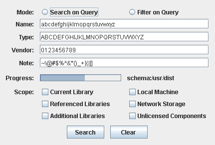
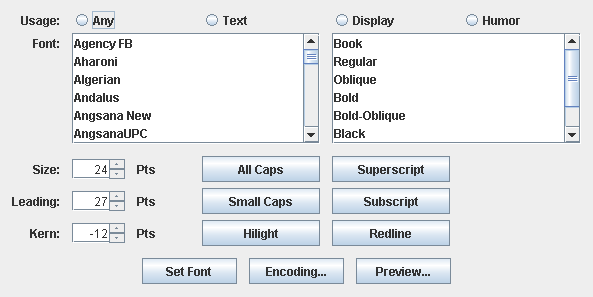
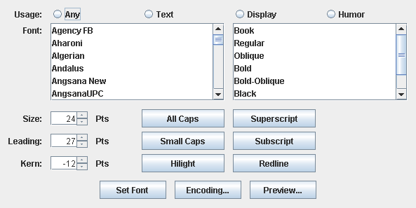

General
Project Documentation

John O'Conner started the Layout Manager Showdown, pitting everyone's favorite layout manager against all challengers in no-holds-barred cage fight. Here's the entry for DesignGridLayout:

While creating DesignGridLayout, the original author used figures 177, 178 and 179 from "Designing Visual Interfaces" to help validate and work through his ideas. Here are the screenshots from matching those figures while using DesignGridLayout.
 
